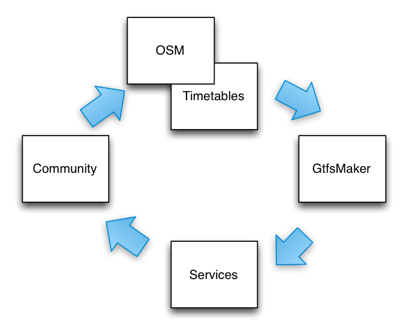
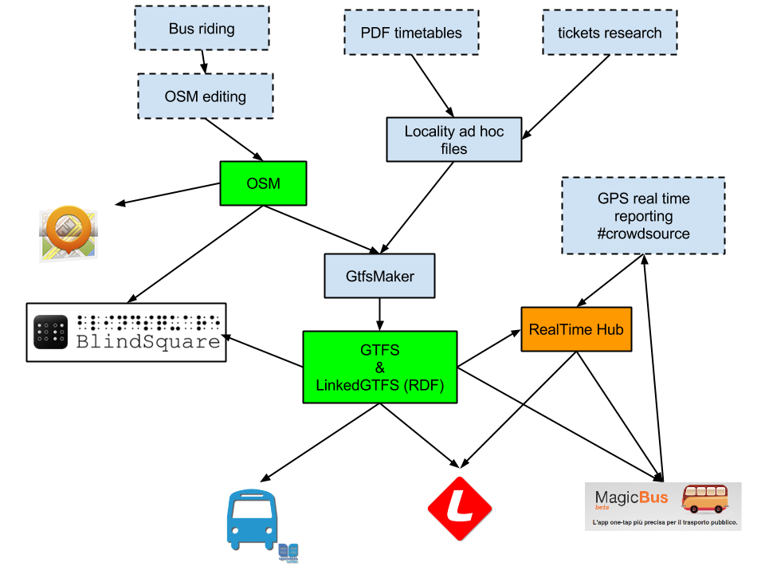
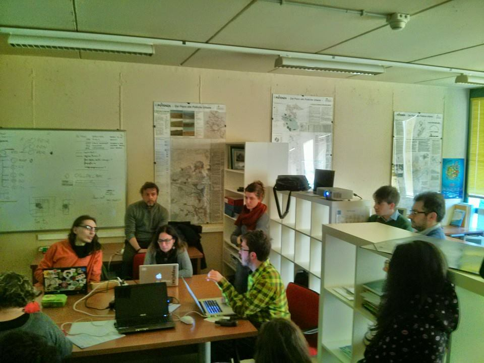
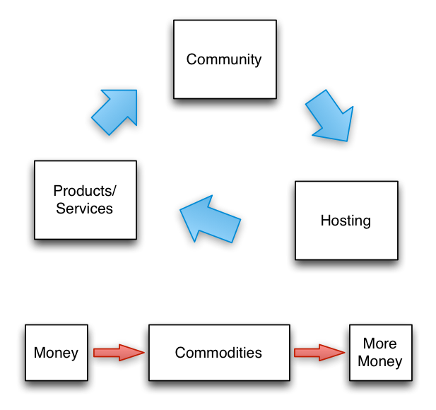

by @elfPavlik/@m4stn
"We do not produce opendata, we produce subversion"Anonymous monk ~ 1230 ac
credits to Pecoranera



19th February 2015
Credits to Federico Amato

FOOD • GEARS • FLAT • TRAVEL
Our spendings are on http://dati.comune.matera.it
Thanks to Alberto Cottica, Piersoft, Michele Salerno, Vincenzo Altieri, Ida Leone, Beniamino Murgante, OpenLab Matera, Eco.